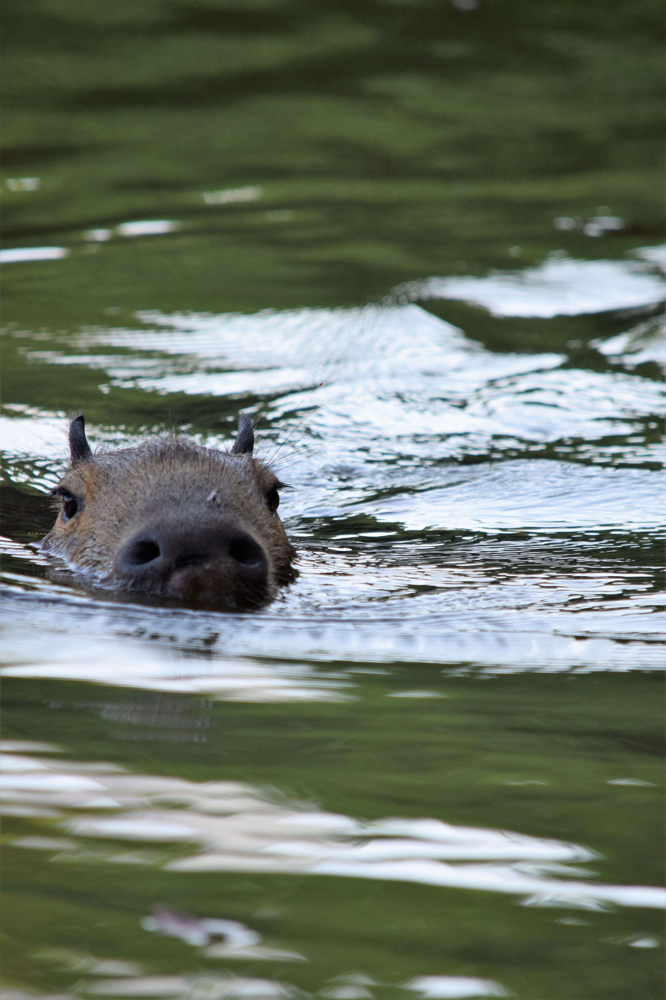

Você sabia que a capivara é o maior roedor do mundo?
Se não, continue lendo para aprender um pouco mais sobre esse animal incrível
Como foi dito, a capivara é um roedor.Sua principal fonte de alimentação são gramíneas encontradas em ambientes semi-aquáticos. Seu habitat natural são os corpos de água permanentes - margens de rios e lagoas - sendo encontrada em todos os países da américa do sul, exceto no Chile.
O nome capivara vem do tupi kapi'wara que é uma aglutinação dos termos kaá, que significa folha, píi, fina, ú, comer, com o sufixo de agente ara, podendo ser entendido, então, como "comedor de grama".
Por sua vez, seu nome ciêntífico, que é Hydrochoerus hydrochaeris, vem dos termos gregos hydro, água, e choiros, porco, podendo ser entendido como porco d'água.